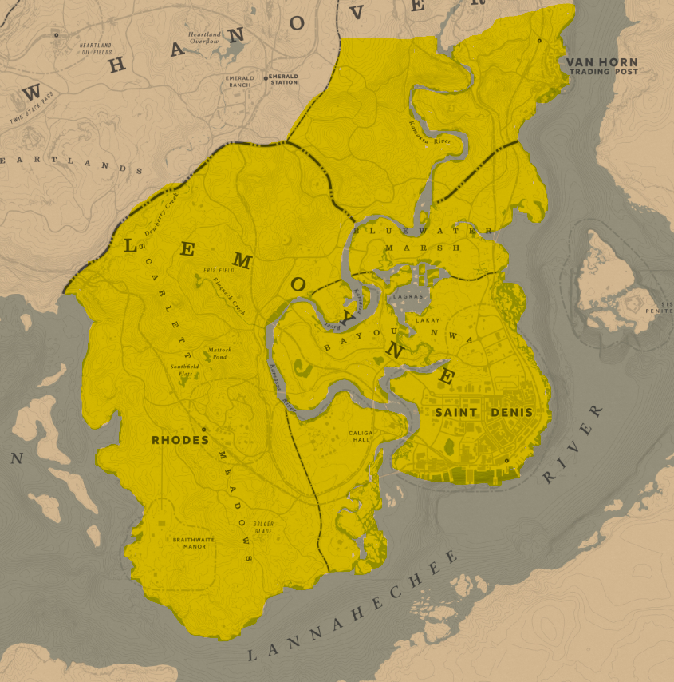
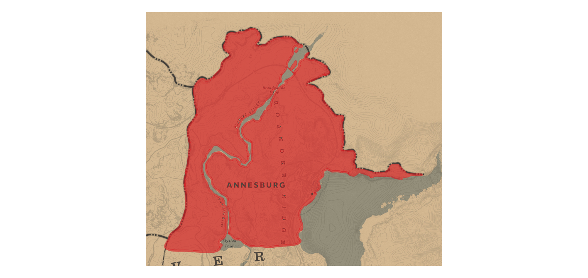
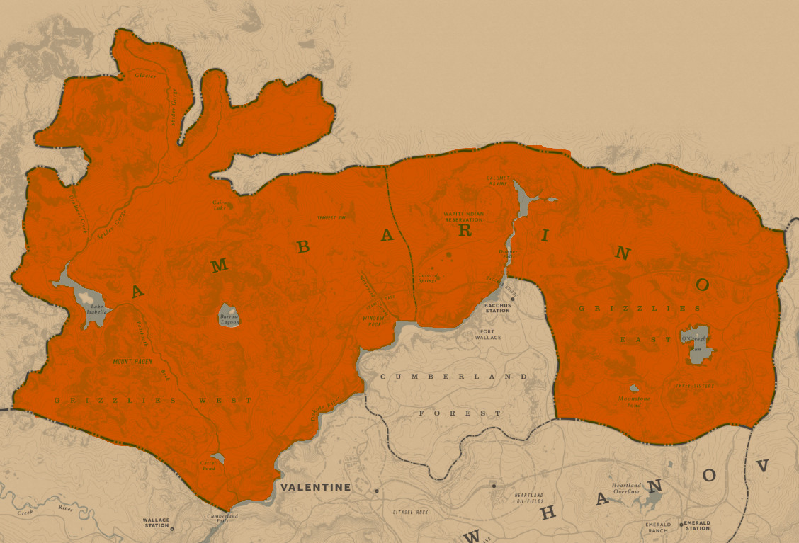

ÁREA DE ATUAÇÃO E PRIORIDADE EM AÇÕES
CAVALARIA

A Cavalaria de Lemoyne tem prioridade máxima na atuação dentro do próprio condado. Caso não haja contingente suficiente disponível, o apoio será solicitado à Cavalaria de New Hannover. Se ainda houver necessidade de reforço, o último recurso será a Cavalaria de New Austin.

A Cavalaria de New Austin possui prioridade de atuação dentro do seu condado. Caso não haja contingente disponível, o primeiro apoio será fornecido pela Cavalaria de New Hannover. Se ainda houver necessidade, a Cavalaria de Lemoyne será acionada como último recurso.

A Cavalaria de New Hannover é responsável prioritariamente pela defesa e ações no seu próprio condado. Na ausência de contingente suficiente, o reforço será solicitado à Cavalaria de Lemoyne. Se houver necessidade adicional, a Cavalaria de New Austin será acionada como apoio final.

A defesa e as operações em Annesburg têm uma prioridade compartilhada entre a Cavalaria de Lemoyne e a Cavalaria de New Hannover, atuando em conjunto de forma equilibrada. Na ausência ou insuficiência de ambos os contingentes, o apoio será solicitado, em último caso, à Cavalaria de New Austin.

A segurança e atuação em West Elizabeth são responsabilidade compartilhada entre todas as Cavalarias — Lemoyne, New Hannover e New Austin. Os três contingentes podem ser acionados de forma conjunta, sem prioridade exclusiva, garantindo presença equilibrada e apoio mútuo conforme a necessidade operacional.

A atuação em Ambarino é de responsabilidade conjunta de todas as Cavalarias — Lemoyne, New Hannover e New Austin. Assim como em West Elizabeth, não há prioridade exclusiva: os contingentes podem ser mobilizados em conjunto, de forma equilibrada, garantindo cobertura total do território e reforço mútuo conforme a necessidade.
Assinado e selado sob a estrela da lei por Celestino Trovão.